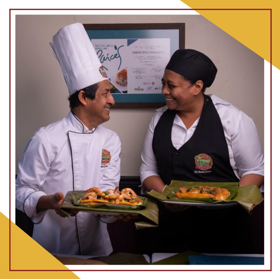
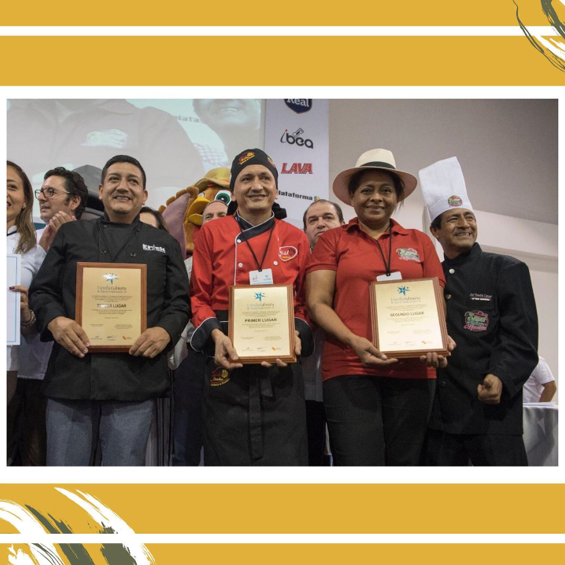

Biografia
El chef del lugar es Demetrio Carrasco que nació en Jipijapa y a los 12 años salió de la casa de sus padres para venir a guayaquil y buscar trabajo. Como era muy pequeño nadie lo tomaba en serio y decidio vender pescado. A los 18 años y con su afán de mejorar, consiguió emplearse en el primer chfa que se abrió en la alborada. Su jefe se caso con una manabita y decidieron ponerle este negocio con el nombre de Sabor típico Manabita; allí conoció a Mariela Zambrano, quien vino de Chone a trabajar en el mismo lugar, y ese encuentro formo una pareja que después de tanto tiempo trabajando juntos, lograron casarse. Tras mas de trece anos laborando con su anterior jefe Simón Chong, ambos lograron heredar el local Sabor típico manabita, en 1992, donde se ubican actualmente. El chef del lugar es Demetrio Carrasco que nació en Jipijapa y a los 12 años salió de la casa de sus padres para venir a guayaquil y buscar trabajo. Como era muy pequeño nadie lo tomaba en serio y decidio vender pescado. A los 18 años y con su afán de mejorar, consiguió emplearse en el primer chfa que se abrió en la alborada. Su jefe se caso con una manabita y decidieron ponerle este negocio con el nombre de Sabor típico Manabita; allí conoció a Mariela Zambrano, quien vino de Chone a trabajar en el mismo lugar, y ese encuentro formo una pareja que después de tanto tiempo trabajando juntos, lograron casarse. Tras mas de trece anos laborando con su anterior jefe Simón Chong, ambos lograron heredar el local Sabor típico manabita, en 1992, donde se ubican actualmente.
Feria gastronómíca Raíces
En 2017 fueron Segundo lugar (estrella culinaria de plata) de las mejores huecas en la feria gatronómica raíces (con el plato típico "La tonga") quedando en el podio con restaurantes muy conocidos como son Gust Concha (Estrella culinaria de oro) con el plato "Rompe colchon", Panaderia y Pasteleria Erick ( Estrella culinaria de bronce).
